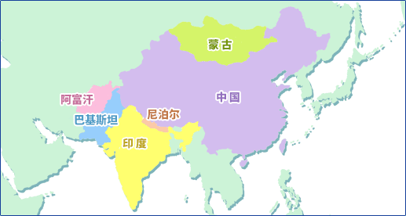

|
亚洲的酸奶阿富汗/印度/中国/尼泊尔/巴基斯坦/蒙古 
阿富汗中部地区使用羊乳，其他地区使用牛乳，北部和南部的山岳地带使用骆驼乳。典型的“Dooqh（也称为Schlumbe）”的制作过程如下：首先将原料乳沸腾后冷却，加入被称为Muste的凝乳（起子培养物）发酵，制作Maasut。将其放入铜器或皮袋中搅拌，去除黄油。剩下的黄油牛奶称为“Dooqh”，可直接饮用，或者再加工后利用。把Dooqh装在布袋里去除乳清后的凝乳叫做“Chaka”，进行利用。另外，将加热Dooqh时形成的上层浮游凝固物放入布袋中去除水分，加放食盐做成球状，经日光下晒干后的保存食品称为“Kurt”，溶于水后用作料理。 印度在东洋，最早利用牛乳的据说是印度，从很早以前就有类似酸奶的发酵乳“Dahi”。Dahi的手工制作方法代代相传，是家庭料理中不可缺少的材料。制作方法首先对牛乳或水牛乳加热杀菌，作为起子培养物加放剩余的Dahi，在室温下发酵半天。Dahi可用于肉类料理、沙拉和饮料等，且经常出现在餐桌上，根据个人喜好食用。把这种Dahi搅拌后去除漂浮的黄油，就是相当于黄油牛奶的“Lassi”。“Threeland”是在去除乳清后的Dahi（叫做“Chakka”）中加放砂糖后 揉捏制成，可作甜品食用，也可用作点心的原料。 中国（内蒙古、西藏）在蒙古民族定居的内蒙古和喜马拉雅周边的西藏，有着与蒙古和尼泊尔相似的畜牧和乳利用。将牛乳静态发酵，去除漂浮的奶油，剩下的脱脂发酵乳叫做“Eedsun su”，加热去除乳清后的凝乳经干燥后就叫“酪丹子”。是冬季的保存食品，可用奶茶融化后食用。在乳液加热后去除奶油的浓缩乳（Bolsun su）中放入起子培养物经静态发酵制成的，叫做“Tarag”，可直接食用。马奶酒即艾日戈，也叫“乞戈”，女性和孩子也可饮用。 尼泊尔因地处高海拔山岳地带，所以分布着适应这一环境的喜马拉雅牛、牦牛、水牛和山羊。尼泊尔的乳制品都用和印度一样的“Dahi ”制成。Dahi 经过搅拌，首先制作黄油和黄油牛奶。从黄油可提取出黄油油“Ghee”。将黄油牛奶加热制成凝固的凝乳，再从凝乳中去除乳清后就是“Chura”。将Chura做成饼状或管状经风干后的保存食品就叫“Churpi”。 巴基斯坦在印度河流域饲养水牛，在山间饲养山羊和牛。将这些动物乳发酵制成“Dahi ”，或直接，或是将去除乳清后的凝乳制成球状经干燥后的制品就是保存食品“Kalut”。 蒙古畜牧放养牛、山羊、羊、马和骆驼五种牲口，为亚洲屈指可数的畜牧业国家，所有的家畜乳都以接近主食的形式被充分利用。将乳液自然放置使之自然发酵，去除表面漂浮的奶油（Zihi）后的脱脂发酵乳称为“Tarag”，可直接食用，或作为干燥乳制品的原料使用。酒精含量与哈萨克斯坦和俄罗斯的Koumiss相仿在2.5%以上的马奶酒“艾日戈”属于国民饮料很受人们欢迎。这种马奶酒在夏季7-9月的马的挤奶期，大约只有两个月左右能够生产。由于艾日戈的酒精含量较高，蒸馏后可制成蒸馏酒“Aruhi”。 |